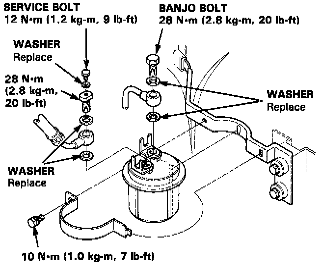

Procedures
PROCEDURE
WARNING: Do not smoke while working on fuel system. Keep open flame away from your work area. While replacing the fuel filter, be careful to keep a safe distance between battery terminals and any tools.
Note: The fuel filter should be replaced every 4 years or 60,000 miles (96,000 km), whichever comes first or whenever the fuel pressure drops below the specified value (330-370 kPa, 46-53 psi with the fuel pressure regulator vacuum hose disconnected and pinched) after making sure that the fuel pump and the fuel pressure regulator are 0K.
1. Place a shop towel under and around the fuel filter.
2. Relieve fuel pressure.
3. Remove the 12 mm banjo bolt and the fuel feed pipe from the filter.
4. Remove the fuel filter clamp and fuel filter.

5. When assembling, use new washers, as shown.